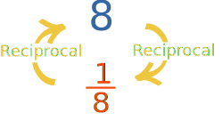
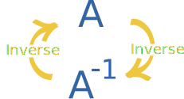
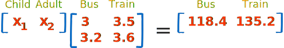

Inverse of a Matrix
Please read our Introduction to Matrices first.
What is the Inverse of a Matrix?
Just like a number has a reciprocal ...

Reciprocal of a Number (note: 18 can also be written 8-1)

Inverse of a Matrix
And there are other similarities:
When we multiply a number by its reciprocal we get 1:
When we multiply a matrix by its inverse we get the Identity Matrix (which is like "1" for matrices):
Same thing when the inverse comes first:
Identity Matrix
We just mentioned the "Identity Matrix". It is the matrix equivalent of the number "1":
A 3x3 Identity Matrix
- It is "square" (has same number of rows as columns),
- It has 1s on the diagonal and 0s everywhere else.
- Its symbol is the capital letter I.
The Identity Matrix can be 2×2 in size, or 3×3, 4×4, etc ...
Definition
Here is the definition:
The inverse of A is A-1 only when:
AA-1 = A-1A = I
Sometimes there is no inverse at all.
(Note: writing AA-1 means A times A-1)
2x2 Matrix
OK, how do we calculate the inverse?
Well, for a 2x2 matrix the inverse is:
In other words: swap the positions of a and d, put negatives in front of b and c, and divide everything by ad−bc .
Note: ad−bc is called the determinant.
Let us try an example:
How do we know this is the right answer?
Remember it must be true that: AA-1 = I
So, let us check to see what happens when we multiply the matrix by its inverse:
And, hey!, we end up with the Identity Matrix!
So it must be right.
It should also be true that: A-1A = I
Why don't you have a go at multiplying these? See if you also get the Identity Matrix:
Why Do We Need an Inverse?
Because with matrices we don't divide! Seriously, there is no concept of dividing by a matrix.
But we can multiply by an inverse, which achieves the same thing.
Imagine we can't divide by numbers ...
... and someone asks "How do I share 10 apples with 2 people?"
But we can take the reciprocal of 2 (which is 0.5), so we answer:
10 × 0.5 = 5
They get 5 apples each.
The same thing can be done with matrices:
Say we want to find matrix X, and we know matrix A and B:
XA = B
It would be nice to divide both sides by A (to get X=B/A), but remember we can't divide.
But what if we multiply both sides by A-1 ?
XAA-1 = BA-1
And we know that AA-1 = I, so:
XI = BA-1
We can remove I (for the same reason we can remove "1" from 1x = ab for numbers):
X = BA-1
And we have our answer (assuming we can calculate A-1)
In that example we were very careful to get the multiplications correct, because with matrices the order of multiplication matters. AB is almost never equal to BA.
A Real Life Example: Bus and Train
A group took a trip on a bus, at $3 per child and $3.20 per adult for a total of $118.40.
They took the train back at $3.50 per child and $3.60 per adult for a total of $135.20.
How many children, and how many adults?
First, let us set up the matrices (be careful to get the rows and columns correct!):

This is just like the example above:
XA = B
So to solve it we need the inverse of "A":
Now we have the inverse we can solve using:
X = BA-1
There were 16 children and 22 adults!
The answer almost appears like magic. But it is based on good mathematics.
Calculations like that (but using much larger matrices) help Engineers design buildings, are used in video games and computer animations to make things look 3-dimensional, and many other places.
It is also a way to solve Systems of Linear Equations.
The calculations are done by computer, but the people must understand the formulas.
Order is Important
Say that we are trying to find "X" in this case:
AX = B
This is different to the example above! X is now after A.
With matrices the order of multiplication usually changes the answer. Do not assume that AB = BA, it is almost never true.
So how do we solve this one? Using the same method, but put A-1 in front:
A-1AX = A-1B
And we know that A-1A= I, so:
IX = A-1B
We can remove I:
X = A-1B
And we have our answer (assuming we can calculate A-1)
Why don't we try our bus and train example, but with the data set up that way around.
It can be done that way, but we must be careful how we set it up.
This is what it looks like as AX = B:
It looks so neat! I think I prefer it like this.
Also note how the rows and columns are swapped over
("Transposed")
compared to the previous example.
To solve it we need the inverse of "A":
It is like the inverse we got before, but
Transposed (rows and columns swapped over).
Now we can solve using:
X = A-1B
Same answer: 16 children and 22 adults.
So matrices are powerful things, but they do need to be set up correctly!
The Inverse May Not Exist
First of all, to have an inverse the matrix must be "square" (same number of rows and columns).
But also the determinant cannot be zero (or we end up dividing by zero). How about this:
24−24? That equals 0, and 1/0 is undefined.
We cannot go any further!
This matrix has no Inverse.
Such a matrix is called "Singular",
which only happens when the determinant is zero.
And it makes sense ... look at the numbers: the second row is just double the first row, and does not add any new information.
And the determinant 24−24 lets us know this fact.
(Imagine in our bus and train example that the prices on the train were all exactly 50% higher than the bus: so now we can't figure out any differences between adults and children. There needs to be something to set them apart.)
Bigger Matrices
The inverse of a 2x2 is easy ... compared to larger matrices (such as a 3x3, 4x4, etc).
For those larger matrices there are three main methods to work out the inverse:
- Inverse of a Matrix using Elementary Row Operations (Gauss-Jordan)
- Inverse of a Matrix using Minors, Cofactors and Adjugate
- Use a computer (such as the Matrix Calculator)
Conclusion
- The inverse of A is A-1 only when AA-1 = A-1A = I
- To find the inverse of a 2x2 matrix: swap the positions of a and d, put negatives in front of b and c, and divide everything by the determinant (ad-bc).
- Sometimes there is no inverse at all